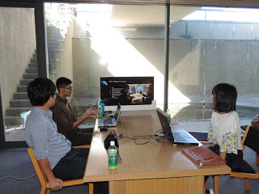
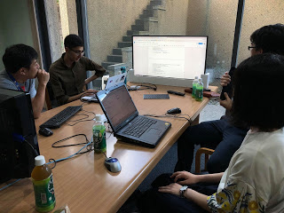
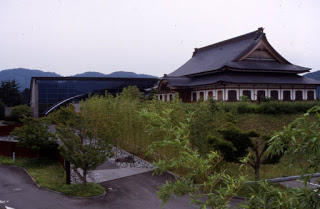

ZENIT ARCHIVE
Beginner's Zen Programming Workshop @Eiheiji
Aug 27, 2018
2018年8月26日に最初の禅プログラミングワークショップを永平寺町の四季の森文化館で開催しました！
We ran the first Zen programming workshop at the Eiheiji Four Seasons Cultural Center on 2018/8/26!
最初は2階の傘松閣で曹洞宗のお坊さんに1時間の時間を頂いて、禅の説明を受け、坐禅のやり方を教わって、坐禅を10分間ぐらい体験させていただきました。
At first, we went up to the 2nd floor Zazen room, where we got about an hour of time from a Soto Zen monk, who explained to us the fundamental of Zen and how to do Zazen meditation. We then did Zazen for about 10 minutes.
その後は、皆で1階のオフィススペースに移動して、皆の自己紹介をしてから、カンザダ氏が禅ｘシリコンバレーの心豊かなプログラミングスタイルについて発表して、また2階に戻って10分間の坐禅しました。
After this, we all went to the 1st floor office space, gave introductions, and listened to a lecture from Amil about Zen x Silicon Valley x Inner Peace programming style. Then, we all returned to the 2nd floor Zazen room and did Zazen for about 10 minutes.
1階に戻って皆でシリコンバレーのプログラミングスタイル（ペア、試験開発、など）で簡単なHTML/JavaScriptのウェブサイトを作りました。
Back at the 1st floor office space, we did pair programming, TDD, and made a simple HTML/JavaScript web page.
ウェブサイトのコードは下記です。
Our website source code is below:
https://code4eiheiji.github.io/20180826_fruit_color.html
https://github.com/code4eiheiji/code4eiheiji.github.io/blob/master/20180826_fruit_color.html
最後にまた傘松閣で坐禅して、会議室に戻って皆の意見を交換しながら喋りました。
At the end, we again did Zazen at the 2nd floor, came back to the office room and exchanged our opinions.
Recent Posts
See All
2019/12/15 ZenIT Workshop @ Tenryuuji - Blog Post
2019/04/14 ZenIT Workshop @ Eiheiji - Blog Post
University of Fukui Students Learn About the Silicon Valley and ZenIT



